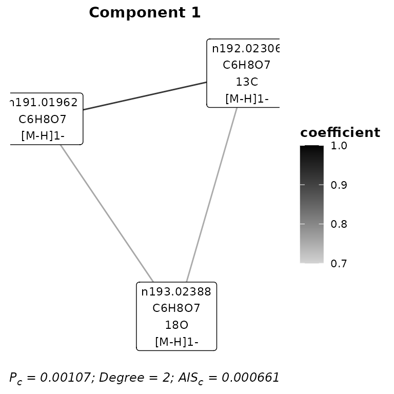
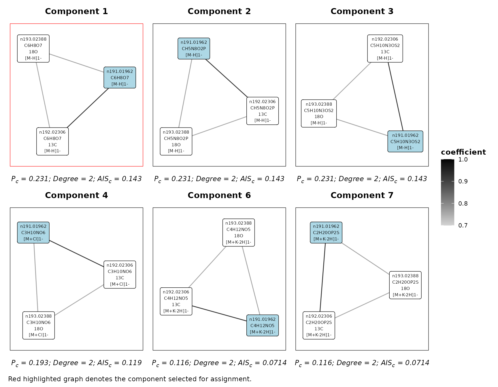

assignments
assignments.RmdIntroduction
The assignments package provides an automated molecular formula assignment approach for ultra-high resolution electrospray ionisation mass spectrometry (ESI-MS) data from metabolomics experiments. This includes data from both direct and flow injection/infusion fingerprinting as well as liquid chromatograph mass spectrometry (LC-MS) profiling analytical techniques.
This vignette will provide a brief overview of the input data required, parameter selection, performing the assignments and assessing the results.
Before we begin, first load the package.
Computational requirements and parallel processing
This approach is computationally intensive so the use of high-performance computing resources is recommended. A suggested minimum would be the use of 16 CPU workers and at least 8GB of RAM per worker (128GB total) to ensure that processing is completed in a reasonable duration.
The parallel back-end is provided by the future package. Information about the available parallel strategies can be found here. This example will use a relatively tiny data set so the following example parallel options will be used:
plan('multisession',workers = 2)Input data
The requirements for data input are designed to be as simple as
possible. Input data should consist of an m/z by sample
intensity matrix with positive an negative mode data combined where
available. The m/z features provided as column names should be
in the form of
<ionisation_mode><m/z>@<retention_time>.
Ionisation mode should be given as a prefix n or
p for negative or positive ionisation modes respectively.
Feature m/z should be provided to an accuracy of least 5
decimal places. The retention time portion
(@<retention_time>) is only required for LC-MS data
and should be provided in minutes.
It is recommended that the data undergo pre-treatment routines such as relative standard deviation filtering, imputation and/or normalisation prior to assignment. However, this is not essential requirement and raw intensity values could also be used.
The input data for this example is a subset from an FIE-HRMS metabolomics experiment and is shown below. The feature intensities are total ion count (TIC) normalised.
feature_data
#> # A tibble: 60 × 10
#> n191.01962 n192.02306 n193.02388 n226.99693 n228.97636 n228.99274 n231.00069
#> <dbl> <dbl> <dbl> <dbl> <dbl> <dbl> <dbl>
#> 1 0.109 0.00401 0.000609 0.000417 0.00135 0.0000912 0.00122
#> 2 0.0955 0.00346 0.000466 0.000306 0.00110 0.0000847 0.000831
#> 3 0.109 0.00418 0.000637 0.000294 0.00113 0.0000879 0.00126
#> 4 0.102 0.00360 0.000516 0.000366 0.00107 0.000107 0.00113
#> 5 0.0956 0.00315 0.000520 0.000487 0.000873 0.000111 0.000840
#> 6 0.0940 0.00350 0.000440 0.000311 0.00112 0.0000228 0.00106
#> 7 0.128 0.00578 0.000784 0.000333 0.00113 0.000137 0.00140
#> 8 0.0890 0.00345 0.000483 0.000365 0.00104 0.000100 0.000951
#> 9 0.0887 0.00317 0.000469 0.000463 0.000829 0.000151 0.000922
#> 10 0.0996 0.00369 0.000539 0.000490 0.000866 0.000193 0.00100
#> # ℹ 50 more rows
#> # ℹ 3 more variables: n384.0495 <dbl>, n385.04874 <dbl>, p208.04518 <dbl>Parameters
Default parameters for a number of techniques are provided. The available techniques can be viewed as shown below.
availableTechniques()
#> [1] "FIE-HRMS" "RP-LC-HRMS" "NP-LC-HRMS"The FIE-HRMS fingerprinting technique parameters would
also be suitable for direct injection data. The default parameters are
designed to be as widely applicable as possible and should suit many
situations. For this example we will specify the use of the
FIE-HRMS parameters.
parameters <- assignmentParameters('FIE-HRMS')The parameters can then be viewed by printing the returned object.
parameters
#>
#> Assignment Parameters:
#>
#> Technique: FIE-HRMS
#> Max M: 800
#> MF rank threshold: 3
#> PPM threshold: 4
#> Relationship limit: 0.001
#> RT limit:
#> Correlations:
#> method: spearman
#> pAdjustMethod: bonferroni
#> corPvalue: 0.05
#> minCoef: 0.7
#> maxCor: Inf
#>
#> Adducts:
#> n: [M-H]1-, [M+Cl]1-, [M+Cl37]1-, [M+K-2H]1-, [M-2H]2-, [2M-H]1-
#> p: [M+H]1+, [M+K]1+, [M+Na]1+, [M+K41]1+, [M+2H]2+, [2M+H]1+
#> Isotopes: 13C, 18O
#> Transformations: M - [O] + [NH2], M - [OH] + [NH2], M + [H2], M - [H2] + [O], M - [H] + [CH3], M - [H] + [NH2], M - [H] + [OH], M + [H2O], M - [H3] + [H2O], M - [H] + [CHO2], M - [H] + [SO3], M - [H] + [PO3H2]It is possible to access and set all of these parameters. For
example, the adducts method can be used to access the
specified adducts:
adducts(parameters)
#> $n
#> [1] "[M-H]1-" "[M+Cl]1-" "[M+Cl37]1-" "[M+K-2H]1-" "[M-2H]2-"
#> [6] "[2M-H]1-"
#>
#> $p
#> [1] "[M+H]1+" "[M+K]1+" "[M+Na]1+" "[M+K41]1+" "[M+2H]2+" "[2M+H]1+"More accessor methods for assignment parameters can be viewed by
running ?parameters.
Additional adducts, isotopes and transformations rules can also be appended to the relevant rules tables within the assignment parameters object. See the assignment parameters documentation for more information.
Assignment
To perform the molecular formula assignment we can execute the following.
assignment <- assignMFs(feature_data,
parameters)
#>
[34m
#> assignments
[39m
[31mv1.0.2
[39m Thu Jan 11 15:07:54 2024
#> ________________________________________________________________________________
#>
[33mAssignment Parameters:
[33m
[39m
#>
#> Technique: FIE-HRMS
#> Max M: 800
#> MF rank threshold: 3
#> PPM threshold: 4
#> Relationship limit: 0.001
#> RT limit:
#> Correlations:
#> method: spearman
#> pAdjustMethod: bonferroni
#> corPvalue: 0.05
#> minCoef: 0.7
#> maxCor: Inf
#>
#> Adducts:
#> n: [M-H]1-, [M+Cl]1-, [M+Cl37]1-, [M+K-2H]1-, [M-2H]2-, [2M-H]1-
#> p: [M+H]1+, [M+K]1+, [M+Na]1+, [M+K41]1+, [M+2H]2+, [2M+H]1+
#> Isotopes: 13C, 18O
#> Transformations: M - [O] + [NH2], M - [OH] + [NH2], M + [H2], M - [H2] + [O], M - [H] + [CH3], M - [H] + [NH2], M - [H] + [OH], M + [H2O], M - [H3] + [H2O], M - [H] + [CHO2], M - [H] + [SO3], M - [H] + [PO3H2]
#> ________________________________________________________________________________
#> No. m/z: 10
#>
[34mCalculating correlations
[39m…
[34mCalculating correlations
[39m
[32m✔
[39m [10 correlations] [0.2S]
#>
[34mCalculating relationships
[39m…
[34mCalculating relationships
[39m
[32m✔
[39m [7.5S]
#>
[34mAdduct & isotopic assignment
[39m…
#> generating molecular formulas…
generating molecular formulas
[32m✔
[39m [6.3S]
#> iteration 1…
iteration 1
[32m✔
[39m [5.5S]
#> iteration 2…
[34mAdduct & isotopic assignment
[39m
[32m✔
[39m [16.9S]
#>
[34mTransformation assignment
[39m…
#> iteration 1 …
iteration 1
[32m✔
[39m [8.5S]
#> iteration 2 …
[34mTransformation assignment
[39m
[32m✔
[39m [8.5S]
#> ________________________________________________________________________________
#>
#>
[32mComplete!
[39m[33.4S]For an overview of the assignment results, we can print the object.
assignment
#>
#> assignments v1.0.2
#> Assignment:
#> Features: 10
#> Correlations: 10
#> Relationships: 35
#>
#> Adduct & isotope assignment:
#> Iterations: 1
#> MFs: 1
#> Assigned: 5
#>
#> Transformation assignment:
#> Iterations: 1
#> MFs: 1
#> Assigned: 1
#>
#> Total assignments: 6 (60%)
#> Unique MFs: 2Results
The following can be used to access the assigned m/z feature information.
assignments(assignment)
#> # A tibble: 6 × 15
#> Name Feature RetentionTime Isotope Adduct MF `Theoretical M` `Measured M`
#> <chr> <chr> <dbl> <chr> <chr> <chr> <dbl> <dbl>
#> 1 n191.… n191.0… NA NA [M-H]… C6H8… 192. 192.
#> 2 n192.… n192.0… NA 13C [M-H]… C6H8… 192. 192.
#> 3 n193.… n193.0… NA 18O [M-H]… C6H8… 192. 192.
#> 4 n226.… n226.9… NA NA [M+Cl… C6H8… 192. 192.
#> 5 n228.… n228.9… NA NA [M+Cl… C6H8… 192. 192.
#> 6 p208.… p208.0… NA NA [M+H]… C6H9… 207. 207.
#> # ℹ 7 more variables: `Theoretical m/z` <dbl>, `Measured m/z` <dbl>,
#> # `PPM error` <dbl>, `MF Plausibility (%)` <dbl>, Mode <chr>,
#> # Component <dbl>, Iteration <chr>These feature assignments can also be summarised for each molecular formula.
summariseAssignments(assignment)
#> # A tibble: 2 × 4
#> MF Features Isotopes & Ionisatio…¹ Count
#> <chr> <chr> <chr> <int>
#> 1 C6H8O7 n191.01962; n192.02306; n193.02388; n226… " [M-H]1-; 13C [M-H]1… 5
#> 2 C6H9NO7 p208.04518 " [M+H]1+" 1
#> # ℹ abbreviated name: ¹`Isotopes & Ionisation Products`We can extract all the calculated correlations between the m/z features.
correlations(assignment)
#> # A tibble: 10 × 12
#> Feature1 Feature2 Mode1 Mode2 `m/z1` `m/z2` RetentionTime1 RetentionTime2
#> <chr> <chr> <chr> <chr> <dbl> <dbl> <dbl> <dbl>
#> 1 n191.01962 p208.04518 n p 191. 208. NA NA
#> 2 n191.01962 n192.02306 n n 191. 192. NA NA
#> 3 n192.02306 p208.04518 n p 192. 208. NA NA
#> 4 n231.00069 n384.0495 n n 231. 384. NA NA
#> 5 n226.99693 n228.99274 n n 227. 229. NA NA
#> 6 n191.01962 n193.02388 n n 191. 193. NA NA
#> 7 n193.02388 p208.04518 n p 193. 208. NA NA
#> 8 n192.02306 n193.02388 n n 192. 193. NA NA
#> 9 n191.01962 n231.00069 n n 191. 231. NA NA
#> 10 n231.00069 p208.04518 n p 231. 208. NA NA
#> # ℹ 4 more variables: RetentionTimeDiff <dbl>, log2IntensityRatio <dbl>,
#> # coefficient <dbl>, ID <int>As well as all the computed mathematical adduct, isotope and transformation relationships.
relationships(assignment)
#> # A tibble: 35 × 19
#> Feature1 Feature2 Mode1 Mode2 `m/z1` `m/z2` RetentionTime1 RetentionTime2
#> <chr> <chr> <chr> <chr> <dbl> <dbl> <dbl> <dbl>
#> 1 n191.01962 p208.04518 n p 191. 208. NA NA
#> 2 n191.01962 p208.04518 n p 191. 208. NA NA
#> 3 n191.01962 p208.04518 n p 191. 208. NA NA
#> 4 n191.01962 p208.04518 n p 191. 208. NA NA
#> 5 n191.01962 p208.04518 n p 191. 208. NA NA
#> 6 n191.01962 p208.04518 n p 191. 208. NA NA
#> 7 n191.01962 p208.04518 n p 191. 208. NA NA
#> 8 n191.01962 n192.02306 n n 191. 192. NA NA
#> 9 n191.01962 n192.02306 n n 191. 192. NA NA
#> 10 n191.01962 n192.02306 n n 191. 192. NA NA
#> # ℹ 25 more rows
#> # ℹ 11 more variables: RetentionTimeDiff <dbl>, Adduct1 <chr>, Adduct2 <chr>,
#> # Isotope1 <chr>, Isotope2 <chr>, Transformation1 <chr>,
#> # Transformation2 <chr>, log2IntensityRatio <dbl>, coefficient <dbl>,
#> # Error <dbl>, ID <int>To view all the iterations conducted during the assignment, the following can be used.
iterations(assignment)
#> [1] "A&I1" "T1"Information for the component subgraphs identified in an iteration
can also be extracted. These can either be the selected
components or all the possible components.
components(assignment,
iteration = 'A&I1',
type = 'selected')
#> # A tibble: 2 × 6
#> Component Size Nodes Degree Density `Component Plausibility`
#> <dbl> <dbl> <int> <dbl> <dbl> <dbl>
#> 1 1 3 3 2 1 0.00107
#> 2 11 1 2 1 1 0.0000981We can extract the tidygraph
tbl_graph object for a given iterations.
graph(assignment,
iteration = 'A&I1',
type = 'selected')
#> # A tbl_graph: 5 nodes and 4 edges
#> #
#> # A directed acyclic simple graph with 2 components
#> #
#> # Node Data: 5 × 21 (active)
#> name Feature RetentionTime Isotope Adduct MF `Theoretical M` `Measured M`
#> <chr> <chr> <dbl> <chr> <chr> <chr> <dbl> <dbl>
#> 1 n191.… n191.0… NA NA [M-H]… C6H8… 192. 192.
#> 2 n192.… n192.0… NA 13C [M-H]… C6H8… 192. 192.
#> 3 n193.… n193.0… NA 18O [M-H]… C6H8… 192. 192.
#> 4 n226.… n226.9… NA NA [M+Cl… C6H8… 192. 192.
#> 5 n228.… n228.9… NA NA [M+Cl… C6H8… 192. 192.
#> # ℹ 13 more variables: `Theoretical m/z` <dbl>, `Measured m/z` <dbl>,
#> # `PPM error` <dbl>, `MF Plausibility (%)` <dbl>, AIS <dbl>, ID <int>,
#> # Component <dbl>, Size <dbl>, Nodes <int>, Degree <dbl>, Density <dbl>,
#> # `Component Plausibility` <dbl>, Weight <dbl>
#> #
#> # Edge Data: 4 × 23
#> from to Feature1 Feature2 Mode1 Mode2 `m/z1` `m/z2` RetentionTime1
#> <int> <int> <chr> <chr> <chr> <chr> <dbl> <dbl> <dbl>
#> 1 1 2 n191.01962 n192.02306 n n 191. 192. NA
#> 2 1 3 n191.01962 n193.02388 n n 191. 193. NA
#> 3 2 3 n192.02306 n193.02388 n n 192. 193. NA
#> # ℹ 1 more row
#> # ℹ 14 more variables: RetentionTime2 <dbl>, RetentionTimeDiff <dbl>,
#> # Adduct1 <chr>, Adduct2 <chr>, Isotope1 <chr>, Isotope2 <chr>,
#> # Transformation1 <chr>, Transformation2 <chr>, log2IntensityRatio <dbl>,
#> # coefficient <dbl>, Error <dbl>, ID <int>, MF1 <chr>, MF2 <chr>Along with the graph of individual component.
component(assignment,
component = 1,
iteration = 'A&I1',
type = 'selected')
#> # A tbl_graph: 3 nodes and 3 edges
#> #
#> # A directed acyclic simple graph with 1 component
#> #
#> # Node Data: 3 × 21 (active)
#> name Feature RetentionTime Isotope Adduct MF `Theoretical M` `Measured M`
#> <chr> <chr> <dbl> <chr> <chr> <chr> <dbl> <dbl>
#> 1 n191.… n191.0… NA NA [M-H]… C6H8… 192. 192.
#> 2 n192.… n192.0… NA 13C [M-H]… C6H8… 192. 192.
#> 3 n193.… n193.0… NA 18O [M-H]… C6H8… 192. 192.
#> # ℹ 13 more variables: `Theoretical m/z` <dbl>, `Measured m/z` <dbl>,
#> # `PPM error` <dbl>, `MF Plausibility (%)` <dbl>, AIS <dbl>, ID <int>,
#> # Component <dbl>, Size <dbl>, Nodes <int>, Degree <dbl>, Density <dbl>,
#> # `Component Plausibility` <dbl>, Weight <dbl>
#> #
#> # Edge Data: 3 × 23
#> from to Feature1 Feature2 Mode1 Mode2 `m/z1` `m/z2` RetentionTime1
#> <int> <int> <chr> <chr> <chr> <chr> <dbl> <dbl> <dbl>
#> 1 1 2 n191.01962 n192.02306 n n 191. 192. NA
#> 2 1 3 n191.01962 n193.02388 n n 191. 193. NA
#> 3 2 3 n192.02306 n193.02388 n n 192. 193. NA
#> # ℹ 14 more variables: RetentionTime2 <dbl>, RetentionTimeDiff <dbl>,
#> # Adduct1 <chr>, Adduct2 <chr>, Isotope1 <chr>, Isotope2 <chr>,
#> # Transformation1 <chr>, Transformation2 <chr>, log2IntensityRatio <dbl>,
#> # coefficient <dbl>, Error <dbl>, ID <int>, MF1 <chr>, MF2 <chr>And all the components of a given feature.
featureComponents(assignment,
feature = 'n191.01962',
type = 'all')
#> # A tibble: 10 × 22
#> Iteration name Feature RetentionTime Isotope Adduct MF `Theoretical M`
#> <chr> <chr> <chr> <dbl> <chr> <chr> <chr> <dbl>
#> 1 A&I1 n191.01… n191.0… NA NA [M-H]… C6H8… 192.
#> 2 A&I1 n191.01… n191.0… NA NA [M-H]… CH5N… 192.
#> 3 A&I1 n191.01… n191.0… NA NA [M-H]… C5H1… 192.
#> 4 A&I1 n191.01… n191.0… NA NA [M+Cl… C2H1… 156.
#> 5 A&I1 n191.01… n191.0… NA NA [M+Cl… C3H1… 156.
#> 6 A&I1 n191.01… n191.0… NA NA [M+K-… C4H1… 154.
#> 7 A&I1 n191.01… n191.0… NA NA [M+K-… C2H2… 154.
#> 8 A&I1 n191.01… n191.0… NA NA [2M-H… CH8N… 96.0
#> 9 A&I1 n191.01… n191.0… NA NA [M+Cl… CH8N… 156.
#> 10 T1 n191.01… n191.0… NA NA [M-H]… C6H8… 192.
#> # ℹ 14 more variables: `Measured M` <dbl>, `Theoretical m/z` <dbl>,
#> # `Measured m/z` <dbl>, `PPM error` <dbl>, `MF Plausibility (%)` <dbl>,
#> # AIS <dbl>, ID <int>, Component <dbl>, Weight <dbl>, Size <dbl>,
#> # Nodes <int>, Degree <dbl>, Density <dbl>, `Component Plausibility` <dbl>The graph of an individual component can be visualised. This first requires the ggraph package to be loaded.
library(ggraph)
#> Loading required package: ggplot2
plotComponent(assignment,
component = 1,
iteration = 'A&I1',
type = 'selected')
We can also visualise the components containing a specific feature for a given iteration.
plotFeatureComponents(
assignment,
feature = 'n191.01962',
iteration = 'A&I1',
type = 'all',
max_components = 6,
axis_offset = 0.2
)
Because a molecular formula ranking threshold is applied during
assignment, it may also be useful to generate all the alternative
molecular formulas and their rankings for a specific m/z,
adduct and isotope using the ipMF function from the mzAnnotation
package.
mzAnnotation::ipMF(191.01962,
adduct = '[M-H]1-',
isotope = NA,
ppm = 6)
#> # A tibble: 13 × 9
#> MF Adduct Isotope `Measured m/z` `Measured M` `Theoretical m/z`
#> <chr> <chr> <lgl> <dbl> <dbl> <dbl>
#> 1 C6H8O7 [M-H]1- NA 191. 192. 191.
#> 2 C7H12O2S2 [M-H]1- NA 191. 192. 191.
#> 3 C10H10P2 [M-H]1- NA 191. 192. 191.
#> 4 CH5N8O2P [M-H]1- NA 191. 192. 191.
#> 5 C5H10N3OS2 [M-H]1- NA 191. 192. 191.
#> 6 H9N4O6P [M-H]1- NA 191. 192. 191.
#> 7 C6H13NP3 [M-H]1- NA 191. 192. 191.
#> 8 H19O3P3S [M-H]1- NA 191. 192. 191.
#> 9 C2H16N2P4 [M-H]1- NA 191. 192. 191.
#> 10 C2H11NO7P [M-H]1- NA 191. 192. 191.
#> 11 C5H2N7O2 [M-H]1- NA 191. 192. 191.
#> 12 CH13N4OPS2 [M-H]1- NA 191. 192. 191.
#> 13 CH21PS4 [M-H]1- NA 191. 192. 191.
#> # ℹ 3 more variables: `Theoretical M` <dbl>, `PPM error` <dbl>,
#> # `Plausibility (%)` <dbl>